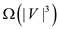
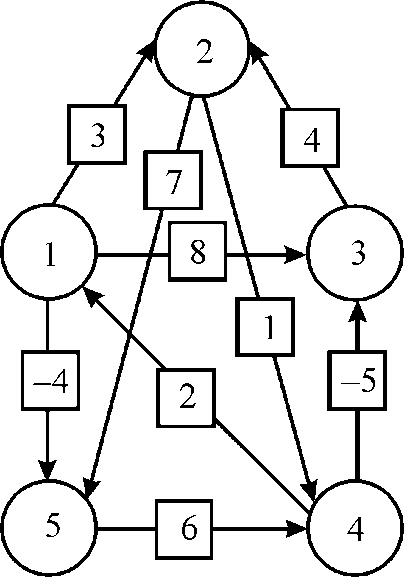
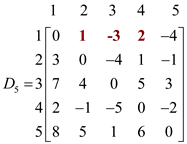
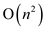
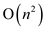
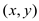

Consider the following directed and weighted graph that is given as Fig 25.2
From the above graph, weight matrix,
Consider the FLOYD-WARSHALL (W) algorithm.
Then n = 6
And the initial distance matrix,
gives the lengths of the shortest paths between every pair of nodes with no intermediate vertices.
For k =1:
gives the lengths of the shortest paths between every pair of nodes with intermediate vertices numbered not more than 1.
For k =2:

gives the lengths of the shortest paths between every pair of nodes with intermediate vertices numbered not more than 2.
For k =3:
gives the lengths of the shortest paths between every pair of nodes with intermediate vertices numbered not more than 3.
For k =4:
gives the lengths of the shortest paths between every pair of nodes with intermediate vertices numbered not more than 4.
For k =5:
gives the lengths of the shortest paths between every pair of nodes with intermediate vertices numbered not more than 5.
For k =6:
gives the lengths of the shortest paths between every pair of nodes with intermediate vertices numbered not more than 6.
Computing the Transitive Closure
Transitive closure of a graph G, having n
vertices, is a  matrix
A and if there is
path from i to j. To find transitive closure of a
graph using adjacency matrix of a graph; the algorithm to find
transitive closure works as follows.
matrix
A and if there is
path from i to j. To find transitive closure of a
graph using adjacency matrix of a graph; the algorithm to find
transitive closure works as follows.
It accepts a graph G as input and gives transitive closure matrix as output matrix andis computed as follows. For a x in edges 0 to n, be the adjacency matrix such that:
; if there is path from vertex i to vertex j going through
vertices (1,2…,x).
; Otherwise
The recursive rule to compute is given below:
The main idea behind transitive closure is as follows:
1. If there is any edge from vertices i to j then path will also exist between them.
By going through any intermediate vertices, one can reach from vertices i to j then, there exists a path between them.Algorithm to compute transitive closure is given below:
TRANSITIVE-CLOSURE (G)
// assign total number of vertices in the variable n
n = |v|
// Create an adjacency matrix for the graph G and assign it to t (0)
t (0) = ADJACENCY–MATRIX (G)
// initialize the entries in the adjacency matrix of the Graph G
INITIALIZE (t(0))
// iterate for loop for all the vertices of the graph
for x=1 to n do
// iterate for loop for all the rows of the adjacency matrix
for i=1 to n do
// iterate for loop for all the column of the adjacency matrix
for j=1 to n do
// Check the condition that whether path exists between vertex i and j
// then assign the value 1 to the adjacency matrix
if t ( x –1)[i, j] = 1
then t(x)[i, j] = 1
// Otherwise check the condition that whether path exists between vertex i // and j by going through an intermediate vertex x. If path exists then
// assign the value 1 to the adjacency matrix
else if t ( x –1)[i, x] = 1 and t(x–1)[x, j]
then t(x)[i, j] = 1
// otherwise assign 0 if path does not exists between vertex i
else
t ( x )[i, j] = 0
// Return transitive closure of the Graph G
return t ( n )
The Procedure ADJACENCY-MATRIX (G) will find the initial adjacency matrix of the given graph G and the procedure INITIALIZEwill initialize diagonal of the matrix t to 1.
Illustration of the above algorithm:
Consider the graph given below:
In the above graph, there are 6 vertices represented with the circle and the connection between two vertices is represented by edges. The arrow represents the path between the vertices from its tail to head. Tail part represents the starting vertex i and head part represents the final vertex j. In this, vertex “1” is the starting vertex and vertex “6” is the final vertex. The transitive closure of the given graph constructed in each iteration of x value is as shown below:
In the above adjacency matrix, if there is any edge from vertex i to j, then path will also exist between them and assign value 1 in (i, j)th position in the adjacency matrix. If the value of i and j are same (i=j) then also assign the value 1 otherwise assign the value 0.
In the above adjacency matrix, if there is any edge from vertices i to j which is going through intermediate vertices “1”, then path will also exist between them and assign value 1 in (i, j)th position in the adjacency matrix.
In the above adjacency matrix, if there is any edge from vertices i to j which is going through intermediate vertices “2”, then the path will also exist between them and assign value 1 in (i, j)th position in the adjacency matrix.
In the above adjacency matrix, if there is any edge from vertices i to j which is going through intermediate vertices “3”, then path will also exist between them and assign value 1 in (i, j)th position in the adjacency matrix.
In the above adjacency matrix, if there is any edge from vertices i to j which is going through intermediate vertices “4”, then path will also exist between them and assign value 1 in (i, j)th position in the adjacency matrix.
In the above adjacency matrix, if there is any edge from vertices i to j which is going through intermediate vertices “5”, then path will also exist between them and assign value 1 in (i, j)th position in the adjacency matrix. Vertices “5” have no outgoing edges to any other vertices of the graph. So, the value of adjacency matrix is not changing.
In the above adjacency matrix, if there is any edge from vertex i to j which is going through intermediate vertices “6”, then path will also exist between them and assign value 1 in (i, j)th position in the adjacency matrix. Vertex “6” has no outgoing edges to any other vertices of the graph. So, the value of adjacency matrix is not changing.
Application to transitive closure: Transitive closure serves various purposes in various application of computer science which are as follow:
1. Transitive closure is reachability analysis of a transition graph. Reachability analysis is the ability to move from one vertex to another vertex in a directed graph. It is an approach used for finding whether a path exists between two pair of vertices or not. It is determined by assigning certain labels to the vertices.
2. It is used for formulation of parsing automata which is present in compiler. Parsing automata is a device which acquire a language. It has several states for going from one place to other places by using different path. States are represented by the vertices in the transitive closure matrix and different path for going from one state to another state is connected with the help of edges.
3. It is used for estimating the database queries which is recursive in nature. Recursive database queries are the query which references itself. With the use of transitive closure in recursive database queries one can find the shortest path from one place to other, it’s running cost as the entire vertex and edges are connected to each other.
FLOYD WARSHALL ALGORITHM
The Floyd–warshall algorithm is an algorithm which is used for calculating the shortest path in a weighted graph having positive or negative weight on their edges. Even this can be used for finding the transitive closure for a relation R. It is an algorithm related to dynamic programming. It is the only algorithm which helps us to find path with negative edge weight.
This algorithm is also used widely for finding transitive closure.
Its best case performance complexity is 
Its worst case performance complexity is
Referring to algorithm FLOYD-WARSHALL (W) from the section 25.2 of the textbook:
Modifying the above algorithm to compute the matrices, this is as following:
1 row
2 Let be a new
 matrix
matrix
// initializing a new matrix
3 forto
4 for to
to
5 ifor
// implementing the weight on its edges
6 NIL
7 else
8 
9
10 for to
to
11 Let be a new
matrix
12 for to
13 forto
14 if
// comparing the distance
15
16 else
17
18  Minimum
Minimum
// finds the minimum path to be traced
19 return // outputs the matrix
The above algorithm will output the new matrix. In older version “for” loop runs from 1 to n but here is little bit difference and this difference divide the algorithm in two parts. First part execution gives the result in line 9 and second gives the result in line 18 but in earlier versions it gives on line 2 and line 7 (consider the algorithm of section 25.2 from the textbook). Implementation of equation (25.6) used in above algorithm from line 5 to line 8 that is first “if-else” construction.Now prove that for all entire predecessors sub-graph is a shortest path tree. Initially prove that Gp is acyclic graph. This is proved by using contradiction. Assume that graph G contains a cycle and take any pair of vertices from the graph.
Assume that some steps of relaxation generate a cycle where a final vertex is equal to starting vertex. Every vertex in cycle is reachable from source node i because every vertex has a predecessor.
By checking the values of d[v] for every vertices which are belonging to the cycle, before invoking the RELAX method.
There exists, two path p1 (connecting vertices i to j) and p2 (connecting vertices j to i) it contradicts the assumption which is given that is there exists a unique path for joining each set of vertices.
Consider the following diagram:
In the above diagram there are two paths, one is from “iabcj” and another is from “iadcj”.
These are two different paths (p1? p2).
Thus it is concluded that our assumption is false and given graph G is an acyclic graph. Gp consists of unique path from source node to final node.
Thus, Gp generates tree rooted at source node.
Consider the equation 25.5,
Now, consider the equation 25.7,
This part of the equation used in last “if-else” statement of the above algorithm (line 14 to 17); here we take the differences because “pi” function is the predecessor of vertex on a shortest path from another vertex with all intermediate vertices.
From the above algorithm, we have recursively as:
Using the line 9 and line 18 from the above modified algorithm, and also
The matrix gives the shortest path for
Floyd-Warshall Procedure
• The space complexity of FLOYD-WARSHALL algorithm is as the algorithm uses n matrices to compute.
• The algorithm given in the question drops all the superscripts and overrides the result of the previous computation.
• Overriding the result of the previous computation does not alter the correctness of the algorithm.
For example, consider the graph as shown below:

Now, compute matrix D using given algorithm.
Initially, the matrix D will be W matrix as shown below:
In the above matrix, if there is any edge from vertices i to j then path will also exist between them and assign value of weight in (i, j)th position in the matrix.
Now for k = 1, vertex “1” can be an intermediate node.
1. The value i=1, and the value of j execute n times to funds shortest path.
2. The value of i increment by one i=1+1=2 and again the value of j execute n times to finds shortest path and so on.
3. The value of i increment by one until i=n and the value of j execute n times to finds shortest path.
There are  or
number of iterations possible to calculate for each k value. So in
this problem, important iterations perform to calculate.
or
number of iterations possible to calculate for each k value. So in
this problem, important iterations perform to calculate.
In the above matrix, weight of d4,2 and d4,5 have been changed which are calculated by using the given formula:
Superscript can be dropped in our computation as for neglecting the cycles in the graph, k cannot be used as an intermediate vertex, moving from vertices i to j.
• As in the above example, when d4,2 is calculated, then in that case, vertex ‘1’ is an intermediate vertex.
• Here, d4,2 position is reached by going through d4,1 and after that d1,2. At the end, intermediate vertex 1 is dropped.
Then, the corresponding matrix D1 will be as shown:
Now for k =2, vertex “2” can be an intermediate node.
1. The value i=1, and the value of j execute n times to funds shortest path.
2. The value of i increment by one i=1+1=2 and again the value of j execute n times to finds shortest path and so on.
3. The value of i increment by one until i=n and the value of j execute n times to finds shortest path.
In the above matrix, weight of d1,4, d3,4 and d3,5 have been changed which are calculated by using the given formula:
Then the corresponding matrix D2 will be as shown:
Now for k =3, so, vertex “3” can be an intermediate node.
1. The value i=1, and the value of j execute n times to funds shortest path.
2. The value of i increment by one i=1+1=2 and again the value of j execute n times to finds shortest path and so on.
3. The value of i increment by one until i=n and the value of j execute n times to finds shortest path.
In the above matrix, weight of d4,2 has been changed which is calculated by using the given formula:
Then the corresponding matrix D3 will be as shown:
Now for k =4, so, vertex “4” can be an intermediate node.
1. The value i=1, and the value of j execute n times to funds shortest path.
2. The value of i increment by one i=1+1=2 and again the value of j execute n times to finds shortest path and so on.
3. The value of i increment by one until i=n and the value of j execute n times to finds shortest path.
In the above matrix, weight of d2,1, d2,3, d2,5, d3,1, d3,5, d5,1, d5,2 and d5,3 have been changed which are calculated by using the given formula:
Now for k =5, vertex “5” can be an intermediate node.
1. The value i=1, and the value of j execute n times to funds shortest path.
2. The value of i increment by one i=1+1=2 and again the value of j execute n times to finds shortest path and so on.
3. The value of i increment by one until i=n and the value of j execute n times to finds shortest path.
Weight of d1,2, d1,3 and d1,4 have been changed which are calculated by using the given formula:
Then the corresponding matrix D5 will be as shown:

Since only one matrix is used to compute the matrix D , over all space complexity is reduced to .
• Because matrix implementation needs two nested for loops which runs up-to n.
• If the value of the dij is min then there is no change in the algorithm as array remains unchanged.
• If the value of is min, where k is any intermediate vertex of graph, by going through the intermediate vertex k if any new shortest path is found, then previous value is replaced with the new value in the matrix.
• So, this will give the result of as the space required by the matrix D is n2.
• As the above example, shortest path from vertices i to j is found using intermediate vertex.
• So, superscript can be dropped in our computation as for neglecting the cycles in the graph, k cannot be use as an intermediate vertex moving from vertices i to j.
FLOYD WARSHALL RECONSTRUCTION FOR SHORTEST PATH
The Floyd–Warshall algorithm is an algorithm which is used for calculating the shortest path in a weighted graph having positive or negative weight on their edges. Even this can be used for finding the transitive closure for a relation R. It is an algorithm related to dynamic programming.
In this algorithm, comparisons are made between each pair of vertices for all possible paths in the graph. The number of comparisons made in the graph is equal to and the number of edges can be up to, and it is such, that all the combinations of edges are tested. It is done so by improving the estimate on the shortest path incrementally till the estimate which is obtained is optimal.
Here, according to the question, deal with the modification of the computation of the predecessor matrix for Floyd-Warshall.
So as mentioned in the question, for the original predecessor matrix (refer equation 25.7, of the textbook) and for the modified one, by approaching towards the algorithm, it will find that
Where
And set
to be instead of,
The predecessor matrixwould still prove to be correct.
As mentioned earlier,
When,
,
So it does not have any effect in the case of equality, that of the two paths, which one is taken, as the weights of both paths are same. It would really mean that one should go from i to j through k, instead of not through k,
So in both cases, the path is the valid shortest path; it means that the matrix would still hold the shortest path.
Detecting negative-weight cycle in a graph using Floyd-Warshall algorithm:
The output matrix of the Floyd-Warshall algorithm helps to find whether there is any negative-weight cycle in a graph.
• Floyd-Warshall algorithm is used to find all-pairs shortest paths. That is, for each pair of vertices (i, j), a shortest path will be calculated. Floyd-Warshall algorithm returns a matrix (D(n)) that represents all the shortest paths between each pair of vertices (i, j).
• Since a shortest path is a simple path that has no repeating vertices, if there is a diagonal value with i=j (repeating vertex), there is a cycle with negative weight in the graph.
• Thus, check the main-diagonal entries of the resultant matrix to find whether there is any negative value. If there is a negative value, for some vertex i, then there is a path weight from i to itself. If it is a negative value, there is a path from i to itself (i.e., cycle), with negative weight.
Therefore by observing diagonal entries of the output matrix of Floyd-Warshall algorithm, it is possible to detect whether there is a negative –weigh cycle or not.
is used to determine the predecessor of any vertex j for all intermediate vertices in the set.
The recursive formula for is as follows:
The modified algorithm of FLOYD-WARSHALL to compute values is as follow:
FLOYD-WARSHALL (W)
//copy all rows of initial directed graph.
1. n= W. rows
//initialize the initial matrix
2. = W
//initialize the value of by NULL
3.
//for loop is used to traverse all vertices of graph.
4. for k=1 to n
// initialize the new matrix and
5. let is a new
matrix
6. let is a new
matrix
// for loop is used to traverse each rows of matrix.
7. for i=1 to n
// inner for loop is used to traverse each column of matrix.
8. for j=1 to n
//if statement is used to check minimum.
9. if
//update the value of
10.
// update the value of intermediate node.
11.
12. else
//update the value of and from previous matrix value.
13.
14.
Explanation of the Algorithm:
• In the above algorithm is used to determine the all internal node of shortest path.
• The value of will be 0 if the value of internal vertex k are null.
• If the value of internal node k is greater than 0 and the value of is less than the value of then the value of will be k.
In the above algorithm outer for loop is used to traverse all
vertices of directed graph so the time complexity of outer loop
will be  and inner
for loop is used to traverse all rows and column of shortest path
matrix so the time complexity of both inner loops will be 
and inner
for loop is used to traverse all rows and column of shortest path
matrix so the time complexity of both inner loops will be 
So, the total time complexity of algorithm will be
 .
.
The modified algorithm of PRINT-ALL-PAIRS-SHORTEST-PATH to take as an input is as follow:
PRINT-ALL-PAIRS-SHORTEST-PATH (, i, j)
//compare the value of particular row and column
1. if i== j
//if the value of row and column are same then display the value of row.
2. print i
//if the value of is null
3. elseif
// display there is no shortest path exist between source to destination.
4. print “no path from” i “to” j exists
5. else
//run all pairs shortest path algorithm to find the shortest path between source to
//destination.
6. PRINT-ALL-PAIRS-SHORTEST-PATH (, i, )
7. Print j
Explanation of the Algorithm:
• All pair shortest path algorithm is used to print the all internal vertices between source to destination.
• In the above algorithm if statement is used to compare the value of row and column to display the path.
• Based on the table entries , shortest paths are printed.
In the above algorithm if statement is used to compare the
value of i and j so the
total time complexity will be
.
• s table in matrix chain multiplication is used store the indexes where the optimal cost is achieved. Thus, s table is used to print the optimal solution (optimal parenthesization of matrices).
• Here in is also used to store the intermediate vertices in the shortest path. That is, like s table, table is used to print the vertices in the shortest path.
An algorithm which is used to calculate the transitive closure (TC) of the directed graph, same algorithm can be used for computing the TC (Transitive closure) of any kind of directed graph. Follow the below steps to evaluate the transitive closure of any kind of directed graph:
• First of all split the directed graph into the graph (Strongly
Connected Component Graph). In the Textbook, section 22.5 provides
the Pseudocode algorithm to generate the component graph of a graph
 with the help of two DFS running search algorithm.
with the help of two DFS running search algorithm.
• DFS first applied on graph and after
that apply on the transpose of the graph .
Both times, it will take the total
.
Both times, it will take the total  time with
at most
time with
at most  edges and
edges and
 vertices.
vertices.
• There is a need to use the provided function f as the generated component graph (CG) turns out to be dag. Component graph vertices represent the one or more vertices from graph which create the Strongly Connected Component (SCC) (refer the figure 22.9 in Textbook).
• As the one vertex of CG is designed from the one or more
vertices of the graph, therefore
in the graph, number of
vertices must be equal or less than the number of vertices in the
graph.
• In the graph, number of
edges must also be equal or less than the graph as the
algorithm is continued by deleting the edges of those vertices
which are same in the strongly connected component (SCC). Thus,
running time of function  on the
graph can never
exceed the.
on the
graph can never
exceed the.
• Now there is need to keep track one set of vertices in the
graph which is
mapped to the every vertex in the graph and call TC
algorithm on graph. This
complete process will take running
time.
• All that which is left need to transform back into TC
(Transitive Closure) of graph from TC of
graph. In the
graph, if there
is defined edge then there
is also an edge in TC of graph and edge is
define as . Thus, the
forward direction approach is easy to use.
. Thus, the
forward direction approach is easy to use.
• If a path which is defined from  to
to
 exist in the graph, then a
path between the components of the graph must be
exist. Thus, reverse direction approach is easy to use.
exist in the graph, then a
path between the components of the graph must be
exist. Thus, reverse direction approach is easy to use.
• If a path between the SCC of and SCC of
in
the graph is exist,
then a path between the some vertex  in
and the some vertex
in
and the some vertex  in must be
exist.
in must be
exist.
• As vertex and vertex
are exist in the same graph, so there
is a defined path from and as
and are also
existing in the same strongly connected component, so there is also
a path from. Thus, path
and are the two
paths which is exist in the graph.
• Generally, calculating the TC of the graph in this way
need time as it
require to look at the all pairs. Therefore, instead of it need to
look at the TC of the graph.
• Now for the every edge which is defined as  in TC of
graph, consider
that set of vertices in graph G is known which are mapped to
the. And these
set of vertices are respectively called as and.
in TC of
graph, consider
that set of vertices in graph G is known which are mapped to
the. And these
set of vertices are respectively called as and.
• Now add another edge  for all vertices where and. This process will also take the equal time to the number of edges in TC of graph G, which is.
Thus, total remaining execution time for the algorithm is
equal to the construct the SCC in
time, and time to execute the TC algorithm on graph
is and
total time for transforming back to the TC of graph G is
.
Thus, it is evaluated that and
total evaluated time is equal to
.